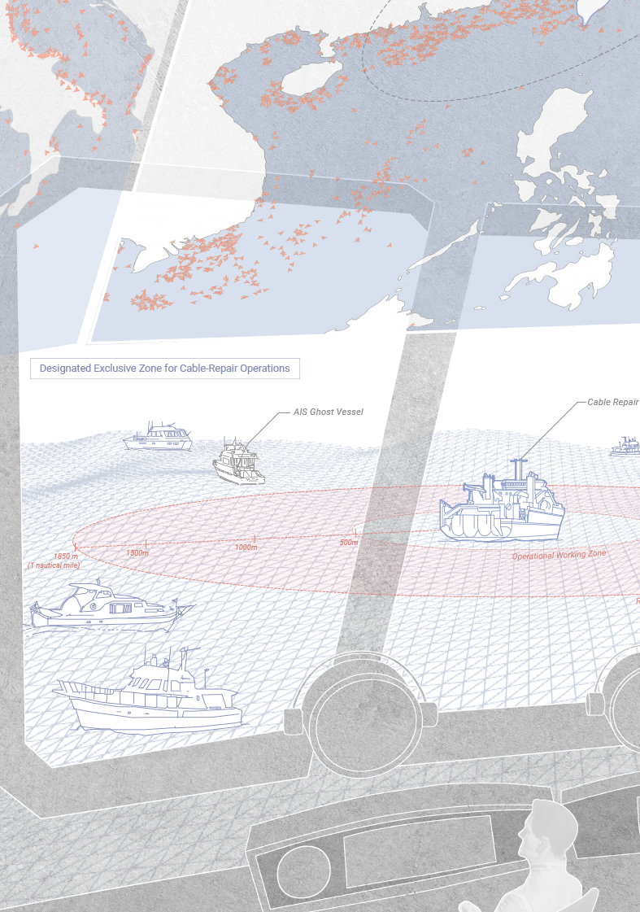
Repair as Infrastructure
The Faultline Geographies of a Global Network Landing in Taiwan
Developed within the core curriculum of the MIT SMArchS Urbanism program, this project reflects an intensive training in research-based urban inquiry. The work integrates mapping, archival research, and spatial analysis as interconnected methods, positioning drawing not merely as representation but as a mode of investigation. Through this approach, the project explores how urban systems can be critically unpacked and articulated through structured research and analytical visualization.
Date: (MIT SMArchS Fall 2025)
Instructor: Rania Ghosn
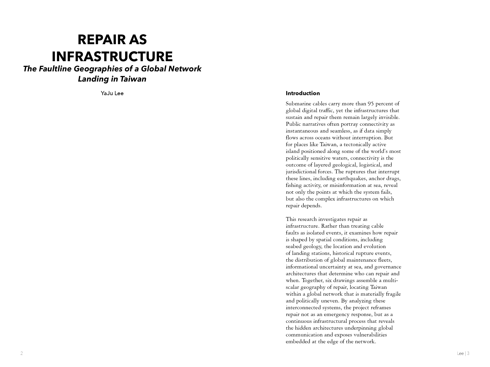
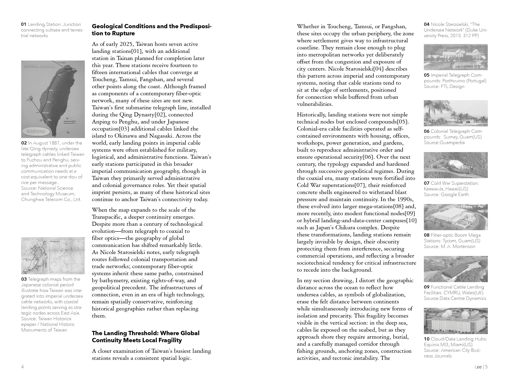
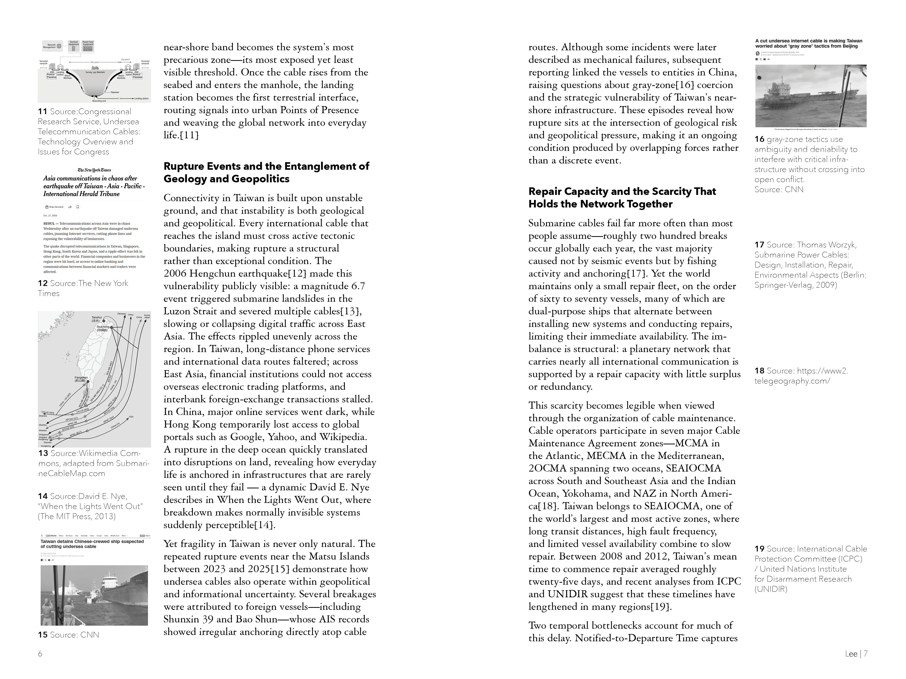
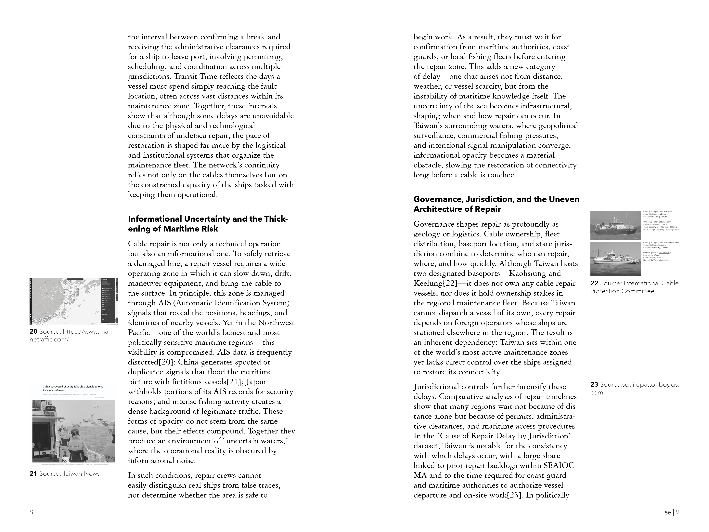
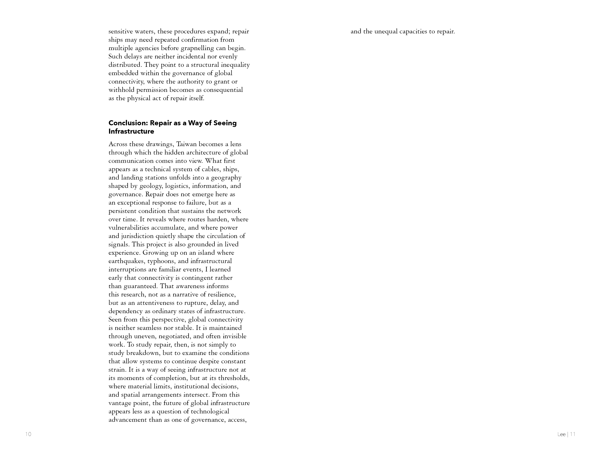
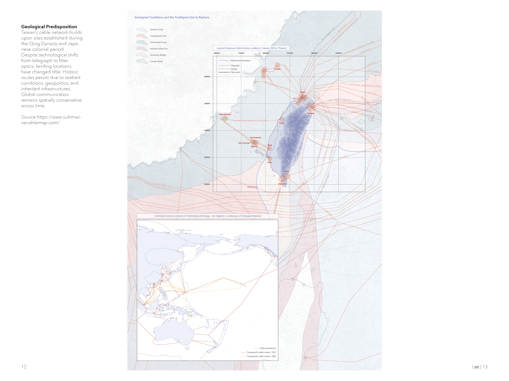
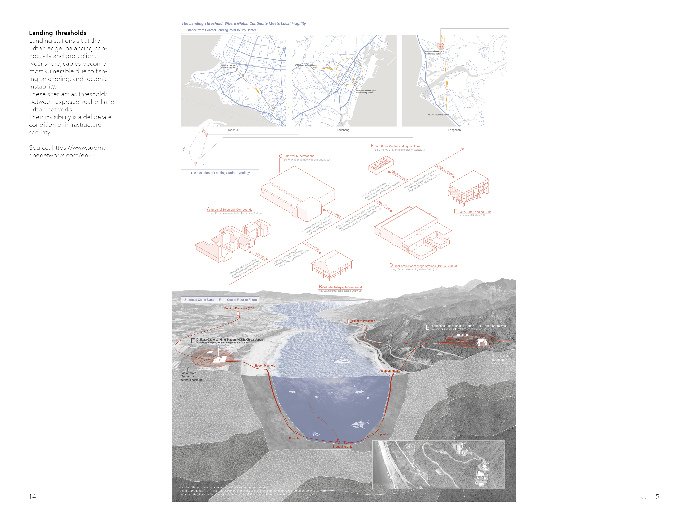
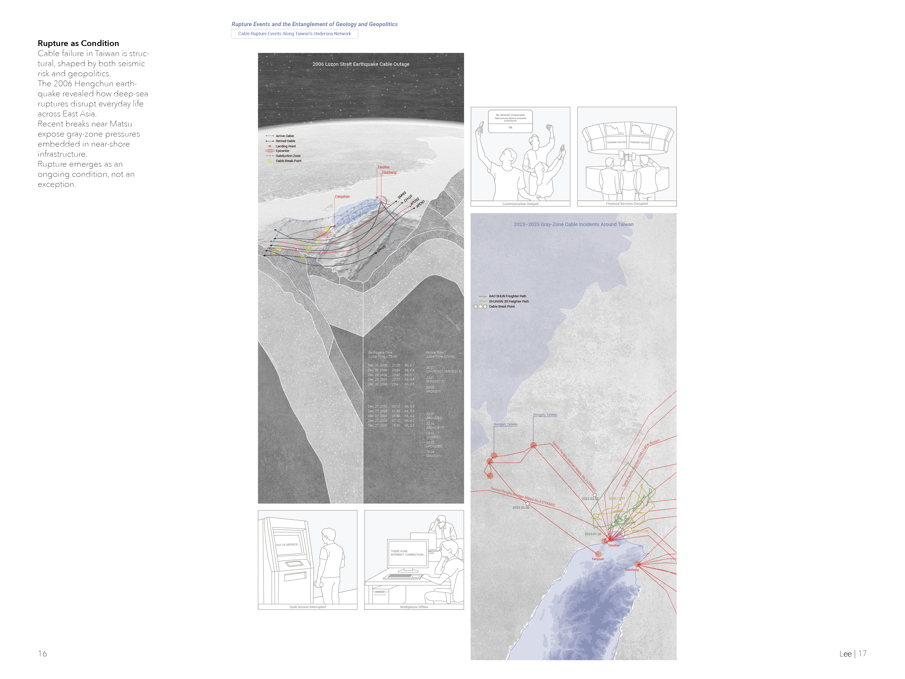
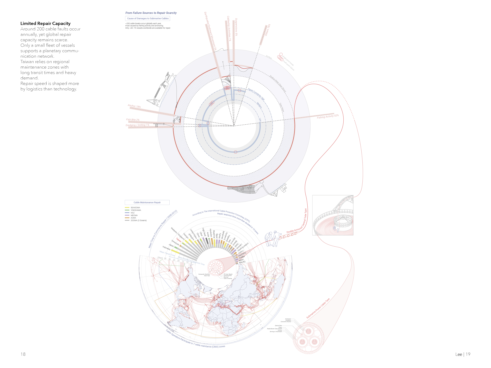
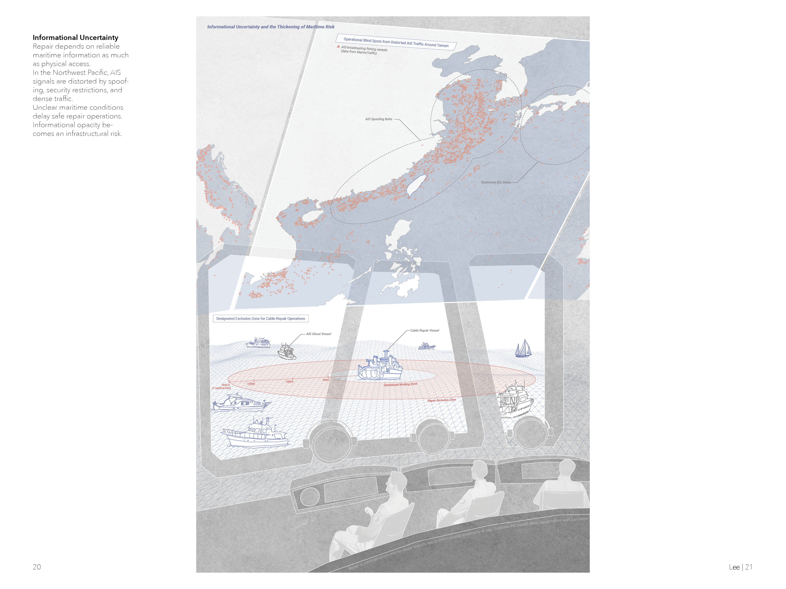
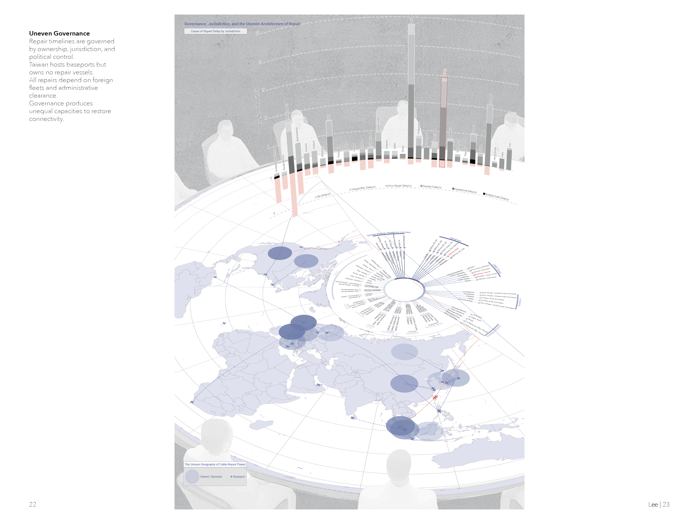